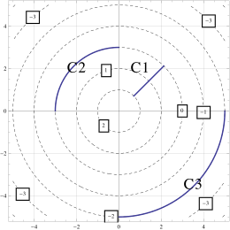

Section 4 First Set : Understanding the Definitions
The contour diagram of a function \(f(x,y)\) is given below. Use it to answer the following questions.

The contour diagram of a function \(f(x,y)\) is given below. Use it to answer the following questions.